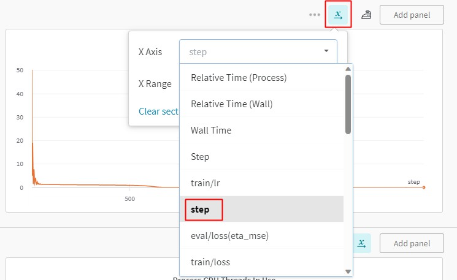

使用指南¶
本文档介绍如何使用 PaddleScience 中的常用基础功能和进阶功能，基础功能包括断点继续训练、迁移学习、模型评估、模型推理；进阶功能包括分布式训练(暂时只支持数据并行)、混合精度训练、梯度累加。
1. 基础功能¶
1.1 使用 YAML + hydra¶
PaddleScience 推荐使用 YAML 文件控制程序训练、评估、推理等过程。其主要原理是利用 hydra 配置管理工具，从 *.yaml 格式的文件中解析配置参数，并传递给运行代码，以对程序运行时所使用的超参数等字段进行灵活配置，提高实验效率。本章节主要介绍 hydra 配置管理工具的基本使用方法。
在使用 hydra 配置运行参数前，请先执行以下命令检查是否已安装 hydra。
如未安装，则需执行以下命令安装 hydra。
1.1.1 打印运行配置¶
Warning
注意本教程内的打印运行配置方法只作为调试使用，hydra 默认在打印完配置后会立即结束程序。因此在正常运行程序时请勿加上 -c job 参数。
以 bracket 案例为例，其正常运行命令为：python bracket.py。若在其运行命令末尾加上 -c job，则可以打印出从运行配置文件 conf/bracket.yaml 中解析出的配置参数，如下所示。
mode: train
seed: 2023
output_dir: ${hydra:run.dir}
log_freq: 20
NU: 0.3
E: 100000000000.0
...
...
EVAL:
pretrained_model_path: null
eval_during_train: true
eval_with_no_grad: true
batch_size:
sup_validator: 128
1.1.2 命令行方式配置参数¶
仍然以配置文件 bracket.yaml 为例，关于学习率部分的参数配置如下所示。
...
TRAIN:
epochs: 2000
iters_per_epoch: 1000
save_freq: 20
eval_during_train: true
eval_freq: 20
lr_scheduler:
epochs: ${TRAIN.epochs} # (1)
iters_per_epoch: ${TRAIN.iters_per_epoch}
learning_rate: 0.001
gamma: 0.95
decay_steps: 15000
by_epoch: false
...
${...}$是 omegaconf 的引用语法，可以引用配置文件中其他位置上的参数，避免同时维护多个相同语义的参数副本，其效果与 yaml 的 anchor 语法类似。
可以看到上述配置文件中的学习率为 0.001，若需修改学习率为 0.002 以运行新的实验，则有以下两种方式：
- 将上述配置文件中的
learning_rate: 0.001改为learning_rate: 0.002，然后再运行程序。这种方式虽然简单，但在实验较多时容易造成实验混乱，因此不推荐使用。 -
通过命令行参数的方式进行修改，如下所示。
这种方式通过命令行参数临时重载运行配置，而不会对
bracket.yaml文件本身进行修改，能灵活地控制运行时的配置，保证不同实验之间互不干扰。
设置含转义字符的参数值
以命令行方式设置参数时，若参数值中含有属于 omegaconf escaping characters 的转义字符(\\, [, ], {, }, (, ), :, =, \)，则推荐使用 \' 将参数值包围起来，保证内部的字符不被转义，否则可能在 hydra 解析参数时引起报错，或以不正确的方式运行程序。假设我们在运行时需要指定 PATH 为 /workspace/lr=0.1,s=[3]/best_model.pdparams，该路径含有转义字符 [, ] 和 =，因此则可以按照如下方式撰写参数。
# 正确的参数指定方式如下
python example.py PATH=\'/workspace/lr=0.1,s=[3]/best_model.pdparams\'
# 错误的参数指定方式如下
# python example.py PATH=/workspace/lr=0.1,s=[3]/best_model.pdparams
# python example.py PATH='/workspace/lr=0.1,s=[3]/best_model.pdparams'
# python example.py PATH="/workspace/lr=0.1,s=[3]/best_model.pdparams"
1.1.3 自动化运行实验¶
如 1.1.2 命令行方式配置参数 所述，可以通过在程序执行命令的末尾加上合适的参数来控制多组实验的运行配置，接下来以自动化执行四组实验为例，介绍如何利用 hydra 的 multirun 功能，实现该目的。
假设这四组实验围绕随机种子 seed 和训练轮数 epochs 进行配置，组合如下：
| 实验编号 | seed | epochs |
|---|---|---|
| 1 | 42 | 10 |
| 2 | 42 | 20 |
| 3 | 1024 | 10 |
| 4 | 1024 | 20 |
执行如下命令即可按顺序自动运行这 4 组实验。
[HYDRA] Launching 4 jobs locally
[HYDRA] #0 : seed=42 TRAIN.epochs=10
...
[HYDRA] #1 : seed=42 TRAIN.epochs=20
...
[HYDRA] #2 : seed=1024 TRAIN.epochs=10
...
[HYDRA] #3 : seed=1024 TRAIN.epochs=20
...
多组实验各自的参数文件、日志文件则保存在以不同参数组合为名称的子文件夹中，如下所示。
PaddleScience/examples/bracket/outputs_bracket/
└── 2023-10-14 # (1)
└── 04-01-52 # (2)
├── TRAIN.epochs=10,20,seed=42,1024 # multirun 总配置保存目录
│ └── multirun.yaml # multirun 配置文件 (3)
├── TRAIN.epochs=10,seed=1024 # 实验编号3的保存目录
│ ├── checkpoints
│ │ ├── latest.pdeqn
│ │ ├── latest.pdopt
│ │ ├── latest.pdparams
│ │ └── latest.pdstates
│ ├── train.log
│ └── visual
│ └── epoch_0
│ └── result_u_v_w_sigmas.vtu
├── TRAIN.epochs=10,seed=42 # 实验编号1的保存目录
│ ├── checkpoints
│ │ ├── latest.pdeqn
│ │ ├── latest.pdopt
│ │ ├── latest.pdparams
│ │ └── latest.pdstates
│ ├── train.log
│ └── visual
│ └── epoch_0
│ └── result_u_v_w_sigmas.vtu
├── TRAIN.epochs=20,seed=1024 # 实验编号4的保存目录
│ ├── checkpoints
│ │ ├── latest.pdeqn
│ │ ├── latest.pdopt
│ │ ├── latest.pdparams
│ │ └── latest.pdstates
│ ├── train.log
│ └── visual
│ └── epoch_0
│ └── result_u_v_w_sigmas.vtu
└── TRAIN.epochs=20,seed=42 # 实验编号2的保存目录
├── checkpoints
│ ├── latest.pdeqn
│ ├── latest.pdopt
│ ├── latest.pdparams
│ └── latest.pdstates
├── train.log
└── visual
└── epoch_0
└── result_u_v_w_sigmas.vtu
- 该文件夹是程序运行时根据日期自动创建得到，此处表示2023年10月14日
- 该文件夹是程序运行时根据运行时刻(世界标准时间,UTC)自动创建得到，此处表示04点01分52秒
- 该文件夹是 multirun 模式下额外产生一个总配置目录，主要用于保存 multirun.yaml，其内的
hydra.overrides.task字段记录了用于组合出不同运行参数的原始配置。
考虑到用户的阅读和学习成本，本章节只介绍了常用的实验方法，更多进阶用法请参考 hydra官方教程。
1.2 模型导出¶
1.2.1 Paddle 推理模型导出¶
Warning
少数案例尚未支持导出功能，因此对应文档中未给出导出命令。
在训练完毕后，我们通常需要将模型导出为 *.pdmodel, *.pdiparams, *.pdiparams.info 三个文件，以便后续推理部署使用。以 Aneurysm 案例为例，导出模型的通用命令如下。
python aneurysm.py mode=export \
INFER.pretrained_model_path="https://paddle-org.bj.bcebos.com/paddlescience/models/aneurysm/aneurysm_pretrained.pdparams"
Tip
由于支持模型导出的案例的 YAML 文件已经将 INFER.pretrained_model_path 的默认值设置为官方提供的预训练模型地址，因此导出官方提供的预训练模型时可以在命令行中省略 INFER.pretrained_model_path=... 参数。
根据终端输出信息，导出的模型会被保存在执行导出命令所在目录的相对路径：./inference/ 文件夹下，如下所示。
...
ppsci MESSAGE: Inference model has been exported to: ./inference/aneurysm, including *.pdmodel, *.pdiparams and *.pdiparams.info files.
1.2.2 ONNX 推理模型导出¶
在导出 ONNX 推理模型前，需要完成 1.2.1 Paddle 推理模型导出 的步骤，得到inference/aneurysm.pdiparams和inference/aneurysm.pdmodel。
然后安装 paddle2onnx。
接下来仍然以 aneurysm 案例为例，介绍命令行直接导出和 PaddleScience 导出两种方式。
paddle2onnx \
--model_dir=./inference/ \
--model_filename=aneurysm.pdmodel \
--params_filename=aneurysm.pdiparams \
--save_file=./inference/aneurysm.onnx \
--opset_version=13 \
--enable_onnx_checker=True
若导出成功，输出信息如下所示
[Paddle2ONNX] Start to parse PaddlePaddle model...
[Paddle2ONNX] Model file path: ./inference/aneurysm.pdmodel
[Paddle2ONNX] Paramters file path: ./inference/aneurysm.pdiparams
[Paddle2ONNX] Start to parsing Paddle model...
[Paddle2ONNX] Use opset_version = 13 for ONNX export.
[Paddle2ONNX] PaddlePaddle model is exported as ONNX format now.
2024-03-02 05:45:12 [INFO] ===============Make PaddlePaddle Better!================
2024-03-02 05:45:12 [INFO] A little survey: https://iwenjuan.baidu.com/?code=r8hu2s
在 aneurysm.py 中的export函数中，将with_onnx参数改为True，
def export(cfg: DictConfig):
# set model
model = ppsci.arch.MLP(**cfg.MODEL)
# initialize solver
solver = ppsci.solver.Solver(
model,
pretrained_model_path=cfg.INFER.pretrained_model_path,
)
# export model
from paddle.static import InputSpec
input_spec = [
{key: InputSpec([None, 1], "float32", name=key) for key in model.input_keys},
]
solver.export(input_spec, cfg.INFER.export_path, with_onnx=True)
然后执行模型导出命令。
若导出成功，输出信息如下所示。
...
[Paddle2ONNX] Start to parse PaddlePaddle model...
[Paddle2ONNX] Model file path: ./inference/aneurysm.pdmodel
[Paddle2ONNX] Paramters file path: ./inference/aneurysm.pdiparams
[Paddle2ONNX] Start to parsing Paddle model...
[Paddle2ONNX] Use opset_version = 13 for ONNX export.
[Paddle2ONNX] PaddlePaddle model is exported as ONNX format now.
ppsci MESSAGE: ONNX model has been exported to: ./inference/aneurysm.onnx
1.3 模型推理预测¶
1.3.1 动态图推理¶
若需使用训练完毕保存或下载得到的模型文件 *.pdparams 直接进行推理（预测），可以参考以下代码示例。
-
加载
*.pdparams文件内的参数到模型中import ppsci import numpy as np # 实例化一个输入为 (x,y,z) 三个维度上的坐标，输出为 (u,v,w) 三个维度上的速度的 model model = ppsci.arch.MLP(("x", "y", "z"), ("u", "v", "w"), 5, 64, "tanh") # 用该模型及其对应的预训练模型路径(或下载地址 url)两个参数初始化 solver solver = ppsci.solver.Solver( model=model, pretrained_model_path="/path/to/pretrained.pdparams", ) # 在 Solver(...) 中会自动从给定的 pretrained_model_path 加载(下载)参数并赋值给 model 的对应参数 -
准备好用于预测的输入数据，并以字典
dict的方式传递给solver.predict。N = 100 # 假设要预测100个样本的结果 x = np.random.randn(N, 1) # 输入数据x y = np.random.randn(N, 1) # 输入数据y z = np.random.randn(N, 1) # 输入数据z input_dict = { "x": x, "y": y, "z": z, } output_dict = solver.predict( input_dict, batch_size=32, # 推理时的 batch_size return_numpy=True, # 返回结果是否转换为 numpy ) # output_dict 预测结果同样以字典的形式保存在 output_dict 中，其具体内容如下 for k, v in output_dict.items(): print(f"{k} {v.shape}") # "u": (100, 1) # "v": (100, 1) # "w": (100, 1)
1.3.2 Inference 推理(python)¶
Paddle Inference 是飞桨的原生推理库，相比 1.3.1 动态图推理 具有更快的推理速度，适合不同平台不同应用场景的快速部署，详细信息可参考: Paddle Inference 文档。
Warning
少数案例尚未支持导出、推理功能，因此对应文档中未给出导出、推理命令。
首先需参考 1.2 模型导出 章节，从 *.pdparams 文件导出 *.pdmodel, *.pdiparams 两个文件。
以 Aneurysm 案例为例，假设导出后的模型文件以 ./inference/aneurysm.* 的形式保存，则推理代码示例如下。
# linux
wget -nc https://paddle-org.bj.bcebos.com/paddlescience/datasets/aneurysm/aneurysm_dataset.tar
# windows
# curl https://paddle-org.bj.bcebos.com/paddlescience/datasets/aneurysm/aneurysm_dataset.tar -o aneurysm_dataset.tar
# unzip it
tar -xvf aneurysm_dataset.tar
python aneurysm.py mode=infer
输出信息如下：
...
...
ppsci INFO: Predicting batch 2880/2894
ppsci INFO: Predicting batch 2894/2894
ppsci MESSAGE: Visualization result is saved to: ./aneurysm_pred.vtu
1.3.3 使用不同的推理配置¶
PaddleScience 提供了多种推理配置组合，可通过命令行进行组合，目前支持的推理配置如下：
| Native | ONNX | TensorRT | MKLDNN | |
|---|---|---|---|---|
| CPU | ✅ | ✅ | / | ✅ |
| GPU | ✅ | ✅ | ✅ | / |
| XPU | TODO | / | / | / |
接下来以 aneurysm 案例和 Linux x86_64 + TensorRT 8.6 GA + CUDA 11.6 软硬件环境为例，介绍如何使用不同的推理配置。
Paddle 提供了原生推理功能，支持 CPU 和 GPU。
运行以下命令进行推理：
TensorRT 是英伟达推出的高性能推理引擎，适用于 GPU 推理加速，PaddleScience 支持了 TensorRT 推理功能。
-
根据你的软硬件环境，下载并解压对应的 TensorRT 推理库压缩包(.tar 文件)：https://developer.nvidia.com/tensorrt#。 推荐使用 TensorRT 8.x、7.x 等较新的版本。
-
在解压完毕的文件中，找到
libnvinfer.so文件所在的目录，将其加入到LD_LIBRARY_PATH环境变量中。 -
运行
aneurysm.py的推理功能，同时指定推理引擎为 TensorRT。
ONNX 是微软开源的深度学习推理框架，PaddleScience 支持了 ONNX 推理功能。
首先按照 1.2.2 ONNX 推理模型导出 章节将 *.pdmodel 和 *.pdiparams 转换为 *.onnx 文件，
然后根据硬件环境，安装 CPU 或 GPU 版的 onnxruntime：
最后运行以下命令进行推理：
完整推理配置参数
| 参数 | 默认值 | 说明 |
|---|---|---|
INFER.device |
cpu |
推理设备，目前支持 cpu 和 gpu |
INFER.engine |
native |
推理引擎，目前支持 native, tensorrt, onnx 和 mkldnn |
INFER.precision |
fp32 |
推理精度，目前支持 fp32, fp16 |
INFER.ir_optim |
True |
是否启用 IR 优化 |
INFER.min_subgraph_size |
30 |
TensorRT 中最小子图 size，当子图的 size 大于该值时，才会尝试对该子图使用 TensorRT 计算 |
INFER.gpu_mem |
2000 |
初始显存大小 |
INFER.gpu_id |
0 |
GPU 逻辑设备号 |
INFER.max_batch_size |
1024 |
推理时的最大 batch_size |
INFER.num_cpu_threads |
10 |
MKLDNN 和 ONNX 在 CPU 推理时的线程数 |
INFER.batch_size |
256 |
推理时的 batch_size |
1.4 断点继续训练¶
在模型的日常训练中，可能存在机器故障或者用户手动操作而中断训练的情况，针对这种情况 PaddleScience 提供了断点继续训练的功能，即在训练时默认会保存最近一个训练完毕的 epoch 对应的各种参数到以下 5 个文件中：
latest.pdparams，该文件保存了神经网络模型的所有权重参数。latest.pdopt，该文件保存了优化器（如 Adam 等一些带有动量记录功能的优化器）的所有参数。latest.pdeqn，该文件保存了所有方程的参数，在一些逆问题中如果方程本身含有待估计（可学习）的参数，那么该文件就会保存这些参数。latest.pdstates，该文件保存了 latest 对应 epoch 的所有评估指标以及 epoch 数。latest.pdscaler（可选），在开启自动混合精度（AMP）功能时，该文件保存了GradScaler梯度缩放器内部的参数。
若在案例代码中，为 Solver 构建时传递了 cfg 参数，则可以通过命令行指定 TRAIN.checkpoint_path 为 latest.* 的所在路径（建议用\'包裹），再执行训练命令即可，免去修改案例代码。
路径填写注意事项
此处只需将路径填写到 "latest" 为止即可，不需要加上其后缀，程序会根据 "/path/to/latest"，自动补充不同文件对应的后缀名来加载 latest.pdparams、latest.pdopt 等文件。
1.5 迁移学习¶
迁移学习是一种广泛使用、低成本提高模型精度的训练方式。在 PaddleScience 中，可以通过在 model 实例化完毕之后，手动为其载入预训练模型权重后开始微调训练；也可以调用 Solver.finetune 接口并指定 pretrained_model_path 参数，自动载入预训练模型权重并开始微调训练。
若在案例代码中，为 Solver 构建时传递了 cfg 参数，则可以通过命令行指定 TRAIN.pretrained_model_path 为预训练权重的所在路径（建议用\'包裹），再执行训练命令即可，免去修改案例代码。
迁移学习建议
在迁移学习时，相对于完全随机初始化的参数而言，载入的预训练模型权重参数是一个较好的初始化状态，因此不需要使用太大的学习率，而可以将学习率适当调小 2~10 倍以获得更稳定的训练过程和更好的精度。
1.6 模型评估¶
当模型训练完毕之后，如果想手动对某一个模型权重文件，评估其在数据集上的精度，则可以选择下面的几种方式之一进行评估。
若在案例代码中，为 Solver 构建时传递了 cfg 参数，则可以通过命令行指定 EVAL.pretrained_model_path 为待评估模型权重的所在路径（建议用\'包裹），并指定模式为eval后，执行评估命令即可，免去修改案例代码。
1.7 实验过程可视化¶
TensorBoardX 是基于 TensorBoard 编写可视化分析工具，以丰富的图表呈现训练参数变化趋势、数据样本、模型结构、PR曲线、ROC曲线、高维数据分布等。帮助用户清晰直观地理解深度学习模型训练过程及模型结构，进而实现高效的模型调优。
PaddleScience 支持使用 TensorBoardX 记录训练过程中的基础实验数据，包括 train/eval loss，eval metric，learning rate 等基本信息，可按如下步骤使用该功能。
-
安装 Tensorboard 和 TensorBoardX
-
在案例中启用 tensorboardX
-
可视化记录数据
根据上述步骤，在训练时 TensorBoardX 会自动记录数据并保存到
${solver.output_dir}/tensorboard目录下，具体所在路径在实例化Solver时，会自动打印在终端中，如下所示。ppsci MESSAGE: TensorboardX tool is enabled for logging, you can view it by running: tensorboard --logdir outputs_VIV/2024-01-01/08-00-00/tensorboardTip
也可以输入
tensorboard --logdir ./outputs_VIV，一次性在网页上展示outputs_VIV目录下所有训练记录，便于对比。在终端里输入上述可视化命令，并用浏览器进入 TensorBoardX 给出的可视化地址，即可在浏览器内查看记录的数据，如下图所示。

VisualDL 是飞桨推出的可视化分析工具，以丰富的图表呈现训练参数变化趋势、数据样本、模型结构、PR曲线、ROC曲线、高维数据分布等。帮助用户清晰直观地理解深度学习模型训练过程及模型结构，进而实现高效的模型调优。
PaddleScience 支持使用 VisualDL 记录训练过程中的基础实验数据，包括 train/eval loss，eval metric，learning rate 等基本信息，可按如下步骤使用该功能。
-
安装 VisualDL
-
在案例中启用 visualDL
-
可视化记录数据
根据上述步骤，在训练时 VisualDL 会自动记录数据并保存到
${solver.output_dir}/vdl目录下，具体所在路径在实例化Solver时，会自动打印在终端中，如下所示。Please NOTE: device: 0, GPU Compute Capability: 7.0, Driver API Version: 11.8, Runtime API Version: 11.6 device: 0, cuDNN Version: 8.4. ppsci INFO: VisualDL tool enabled for logging, you can view it by running: visualdl --logdir outputs_darcy2d/2023-10-08/10-00-00/TRAIN.epochs=400/vdl --port 8080在终端里输入上述可视化命令，并用浏览器进入 VisualDL 给出的可视化地址，即可在浏览器内查看记录的数据，如下图所示。

WandB 是一个第三方实验记录工具，能在记录实验数据的同时将数据上传到用户的私人账户上，防止实验记录丢失。
PaddleScience 支持使用 WandB 记录基本的实验数据，包括 train/eval loss，eval metric，learning rate 等基本信息，可按如下步骤使用该功能
-
安装 wandb
-
注册 wandb 并在终端登录
-
在案例中启用 wandb
如上述代码所示，指定
use_wandb=True，并且设置wandb_config配置字典中的project、name、dir三个字段，然后启动训练即可。训练过程会实时上传记录数据至 wandb 服务器，训练结束后可以进入终端打印的预览地址在网页端查看完整训练记录曲线。注意
由于每次调用
wandb.log会使得其自带的计数器Step自增 1，因此在 wandb 的网站上查看训练记录时，需要手动更改 x 轴的单位为step(全小写)，如下所示。否则默认单位为 wandb 自带的
Step(S大写) 字段，会导致显示步数比实际步数多几倍。 
{kind=link}
2. 进阶功能¶
2.1 贝叶斯超参搜索¶
hydra 的自动化实验功能可以与 optuna 超参数调优工具一起使用。在 yaml 文件中设置好需要调整的参数和最大实验次数后，可以调用 Tree-structured Parzen Estimator(TPE) 算法进行自动化调参工具，效率高于网格调参法。
下面以 viv 案例为例，介绍如何在 PaddleScience 中使用该方法。
-
安装 1.1.0 以上版本的
hydra-core以及hydra-optuna插件 -
修改
viv.yaml文件，在defaults:和hydra:字段下分别添加如下配置（高亮部分所示）viv.yamldefaults: - ppsci_default - TRAIN: train_default - TRAIN/ema: ema_default - TRAIN/swa: swa_default - EVAL: eval_default - INFER: infer_default - override hydra/sweeper: optuna # (1) - _self_ hydra: run: # dynamic output directory according to running time and override name dir: outputs_VIV/${now:%Y-%m-%d}/${now:%H-%M-%S}/${hydra.job.override_dirname} job: name: ${mode} # name of logfile chdir: false # keep current working directory unchanged callbacks: init_callback: _target_: ppsci.utils.callbacks.InitCallback sweep: # output directory for multirun dir: ${hydra.run.dir} subdir: ./ sweeper: # (2) direction: minimize # (3) study_name: viv_optuna # (4) n_trials: 20 # (5) n_jobs: 1 # (6) params: # (7) MODEL.num_layers: choice(2, 3, 4, 5, 6, 7) # (8) TRAIN.lr_scheduler.learning_rate: interval(0.0001, 0.005) # (9)- 指定了使用
optuna进行超参数优化。 sweeper:：这一行指定了 Hydra 使用的 sweeper 插件，用于进行参数扫描。在这个例子中，它将使用 Optuna 进行超参数优化。direction: minimize：这指定了优化的目标方向。minimize 表示我们希望最小化目标函数（例如模型的验证损失）。如果我们希望最大化某个指标（例如准确率），则可以设置为 maximize。study_name: viv_optuna：这设置了 Optuna 研究（Study）的名称。这个名称用于标识和引用特定的研究，有助于在以后的分析或继续优化时跟踪结果。n_trials: 20：这指定了要运行的总试验次数。在这个例子中，Optuna 将执行 20 次独立的试验来寻找最佳的超参数组合。n_jobs: 1：这设置了可以并行运行的试验数量。值为 1 意味着试验将依次执行，而不是并行。如果你的系统有多个 CPU 核心，并且希望并行化以加速搜索过程，可以将这个值设置为更高的数字或 -1（表示使用所有可用的 CPU 核心）。params:： 这一节定义了要优化的超参数以及它们的搜索空间。MODEL.num_layers: choice(2, 3, 4, 5, 6, 7)：这指定了模型层数的可选值。choice 函数表示 Optuna 在 2, 3, 4, 5, 6, 和 7 中随机选择一个值。TRAIN.lr_scheduler.learning_rate: interval(0.0001, 0.005)：这指定了学习率的搜索范围。interval 表示学习率的值将在 0.0001 和 0.005 之间均匀分布地选择。
如上所示，在
hydra.sweeper节点下添加了optuna插件的配置，并在params节点下指定了要调优的参数及其范围： 1. 模型层数MODEL.num_layers，在 [2, 3, 4, 5, 6, 7] 共 6 种层数间进行调优。 2. 学习率TRAIN.lr_scheduler.learning_rate，在 0.0001 ~ 0.005 之间进行调优。注意
- 调优的参数需要与 yaml 文件中配置的参数名一致，如
MODEL.num_layers、TRAIN.lr_scheduler.learning_rate。 - 调优的参数范围根据不同语义进行指定，比如模型层数必须为整数，可以使用
choice(...)设置有限范围，而学习率一般为浮点数，可以使用interval(...)设置其上下界。
- 指定了使用
-
修改 viv.py，使得被
@hydra.main装饰的main函数返回实验指标结果（高亮部分所示）viv.pydef train(cfg: DictConfig): ... # initialize solver solver = ppsci.solver.Solver( model, equation=equation, validator=validator, visualizer=visualizer, cfg=cfg, ) # evaluate l2_err_eval, _ = solver.eval() return l2_err_eval ... @hydra.main(version_base=None, config_path="./conf", config_name="viv.yaml") def main(cfg: DictConfig): if cfg.mode == "train": return train(cfg) elif cfg.mode == "eval": evaluate(cfg) -
运行以下命令，开始自动化调优
在 20 次调优实验运行完毕后，在模型保存目录下，会生成 optimization_results.yaml 文件，其中包含了最佳的调优结果，如下所示：
name: optuna
best_params:
MODEL.num_layers: 7
TRAIN.lr_scheduler.learning_rate: 0.003982453338298202
best_value: 0.02460772916674614
更多详细信息以及多目标自动调优方法，可参考：Optuna Sweeper plugin 和 Optuna。
2.2 分布式训练¶
2.2.1 数据并行¶
接下来以 examples/pipe/poiseuille_flow.py 为例，介绍如何正确使用 PaddleScience 的数据并行功能。分布式训练细节可以参考：Paddle-使用指南-分布式训练-快速开始-数据并行。
-
在 constraint 实例化完毕后，将
ITERS_PER_EPOCH重新赋值为经过自动多卡数据切分后的dataloader的长度（一般情况下其长度等于单卡 dataloader 的长度除以卡数，向上取整），如代码中高亮行所示。 -
使用分布式训练命令启动训练，以 4 卡数据并行训练为例
2.3 自动混合精度训练¶
接下来介绍如何正确使用 PaddleScience 的自动混合精度功能。自动混合精度的原理可以参考：Paddle-使用指南-性能调优-自动混合精度训练（AMP）。
若想在训练中启用自动混合精度，则可以选择下面的几种方式之一。O1 为自动混合精度，O2 为更激进的纯 fp16 训练模式，一般推荐使用 O1。
若在案例代码中，为 Solver 构建时传递了 cfg 参数，则可以通过命令行指定 use_amp、amp_level 再执行训练/评估命令即可，免去修改案例代码。
2.4 梯度累加¶
接下来介绍如何正确使用 PaddleScience 的梯度累加功能。梯度累加的原理可以参考：Paddle-使用指南-性能调优-自动混合精度训练（AMP）-动态图下使用梯度累加。
实例化 Solver 时指定 update_freq 参数为大于 1 的正整数即可。如代码中高亮行所示，update_freq 可以设置为 2 或者更大的整数，推荐使用 2、4、8，此时对于训练任务来说，全局 batch size 等价于 update_freq * batch size。梯度累加方法在大多数场景中能够让间接地扩大每个 batch 内的样本数量，从而让每个 batch 分布更接近真实数据分布，提升训练任务的性能。
2.5 多任务学习¶
在机理驱动、数理融合场景中，往往会同时优化多个损失项，如控制方程残差损失、（初）边值条件损失等。在训练过程中这些损失项对参数的梯度方向可能会互相冲突，阻碍训练精度收敛，而这正是多任务学习方法能解决的问题。因此 PaddleScience 在多任务学习模块中引入了几种常见的算法，其主要通过对不同任务的权重或产生的梯度进行调整，从而缓解该问题，最终提升模型收敛精度。下面以 Relobralo 算法进行举例，使用方式如下：
-
实例化一个多任务学习方法的对象
-
将该对象作为
Solver的实例化参数之一传入 -
启动训练，训练过程中
loss_aggregator会自动对获取到的多个损失项应用对应的多任务学习方法进行优化影响说明
个别多任务学习方法（如weight based method）可能会改变训练过程中损失函数的计算方式，但仅限于影响训练过程，模型评估过程的损失计算方式保持不变。
3. 使用 Nsight 进行性能分析¶
Nsight是NVIDIA面相开发者提供的开发工具套件，能提供深入的跟踪、调试、评测和分析，以优化跨 NVIDIA GPU和CPU的复杂计算应用程序。详细文档可参考：Nsight Systems Document
PaddleScience 初步支持使用 Nsight 进行性能分析，以 linux 开发环境 + laplace2d 案例为例，按照如下步骤使用 nsight 工具生成性能分析报告并查看分析结果。
-
安装 nsight-system
开发机上下载 linux nsight-system 软件：nsight-systems/2023.4.1，并将 nsight 添加到环境变量
PATH中：执行：
PATH=/path/to/nsight-systems/2023.4.1/bin:$PATH，同时在 windows 机器上安装相同版本的 nsight-system 软件。 -
用 nsys 命令运行程序，生成性能分析文件
-
查看分析结果
程序结束后，在终端内会打印出性能分析数据（如下所示），同时在上述
-o参数指定的相对文件路径生成laplace2d.nsys-rep和laplace2d.sqlite两个文件。在 windows 上使用 NVIDIA Nsight Systems 软件打开
laplace2d.nsys-rep，即可在图形化的界面上查看性能分析数据。... ... Only run 25 steps when 'NVTX' is set in environment for nsight analysis. Exit now ...... Generating '/tmp/nsys-report-18e4.qdstrm' [1/7] [========================100%] laplace2d.nsys-rep [2/7] [========================100%] laplace2d.sqlite [3/7] Executing 'nvtx_sum' stats report Time (%) Total Time (ns) Instances Avg (ns) Med (ns) Min (ns) Max (ns) StdDev (ns) Style Range -------- --------------- --------- ------------- ------------- ----------- ----------- ------------- ------- ------------------------------------ 15.1 794,212,341 25 31,768,493.6 5,446,410.0 5,328,471 661,841,104 131,265,333.9 PushPop Loss computation 14.5 766,452,142 25 30,658,085.7 4,369,873.0 4,281,927 659,795,434 131,070,475.4 PushPop Constraint EQ 13.0 687,324,359 1,300 528,711.0 32,567.5 21,218 641,625,892 17,794,532.4 PushPop matmul dygraph 12.9 678,475,194 1 678,475,194.0 678,475,194.0 678,475,194 678,475,194 0.0 PushPop Training iteration 1 12.8 673,614,062 1,300 518,164.7 19,802.5 14,499 641,525,121 17,792,027.2 PushPop matmul compute 3.9 203,945,648 25 8,157,825.9 8,029,819.0 7,797,185 9,119,496 359,173.3 PushPop Loss backward ... ...